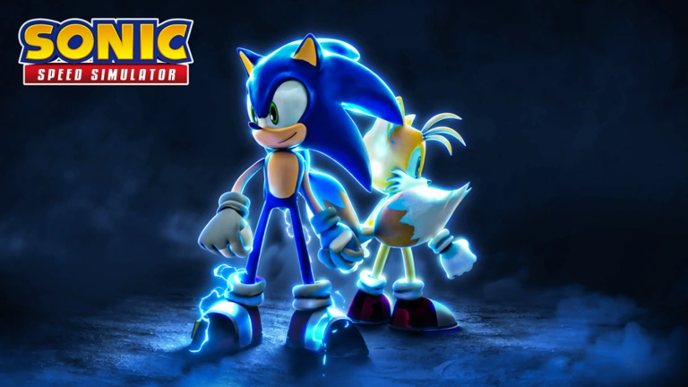

Sonic speed simulator
Sonic en zijn vrienden door uitgestrekte werelden racet en je snelheid verhoogt door ringen Sonic Speed Simulator is een razendsnelle online game waarin je met te verzamelen. Beleef de ultieme snelheidservaring terwijl je nieuwe gebieden, personages en uitdagingen vrijspeelt. Deze gids helpt je op weg, of je nu een beginner bent of een ervaren speler die zijn snelheid wil maximaliseren.
1. Beginnen met Sonic Speed Simulator
Bij aanvang start je met een basis snelheid, maar naarmate je meer ringen verzamelt en races voltooit, neemt je snelheid exponentieel toe. Het doel is simpel: hoe sneller je gaat, hoe meer mogelijkheden je vrijspeelt. Hier zijn enkele tips om snel te beginnen:
- Verzamel zoveel mogelijk ringen: Ringen zijn de sleutel tot je snelheid. Ze geven je niet alleen meer snelheid, maar stellen je ook in staat om nieuwe power-ups en upgrades te kopen.
- Springen en ontwijken: Onderweg kom je obstakels tegen die je vertragen. Zorg ervoor dat je leert om efficiënt te springen en obstakels te ontwijken om je momentum te behouden.
- XP Orbs verzamelen: Naast ringen vind je XP Orbs verspreid over de kaart. Deze orbs geven je ervaringspunten (XP) waarmee je in level stijgt, wat je snelheid nog verder verhoogt.
2. Personages en Skills
In Sonic Speed Simulator kun je meer dan alleen Sonic spelen. Naarmate je verder komt in het spel, kun je verschillende personages vrijspelen, zoals Tails, Knuckles en Amy. Elk personage heeft unieke vaardigheden die je speelstijl kunnen beïnvloeden.
- Sonic: De snelste van allemaal. Zijn focus ligt puur op snelheid.
- Tails: Kan door de lucht zweven voor kortere periodes, handig om moeilijk bereikbare plaatsen te bereiken.
- Knuckles: Biedt meer kracht en stabiliteit bij botsingen met obstakels.
- Amy: Specialiseert zich in het verzamelen van ringen, wat haar een uitstekende keuze maakt voor het snel verhogen van je snelheid.
3. Verkenning van Gebieden
De game bevat verschillende werelden die je kunt verkennen naarmate je verder komt. Elke wereld biedt unieke uitdagingen en verzamelobjecten.
- Green Hill Zone: Dit is de beginnerswereld, waar je leert hoe de game werkt. Het is een relatief eenvoudige wereld, maar biedt voldoende uitdagingen om je vaardigheden te testen.
- Lost Valley: Een geavanceerdere wereld die meer precisie vereist bij het springen en ontwijken van obstakels.
- Emerald Hill: Een woestijnachtige omgeving met snelle afdalingen en steile hellingen.
- Snow Valley: Deze besneeuwde wereld heeft gladde oppervlakken, wat een andere manier van racen en bewegen vereist.
4. Races en Events
Races zijn een belangrijk onderdeel van de game. Door deel te nemen aan races tegen andere spelers kun je extra XP en ringen verdienen. Wekelijkse events voegen ook extra doelen toe aan het spel, zoals het verzamelen van speciale voorwerpen of het behalen van een bepaalde snelheid binnen een bepaalde tijdslimiet.
- Pro Tip: Doe zoveel mogelijk mee aan de races, zelfs als je denkt dat je niet zult winnen. De beloningen zijn de moeite waard en helpen je om snel vooruitgang te boeken.
5. Chao en Trails
Tijdens het spelen kun je Chao’s en Trails verzamelen, die je een boost geven tijdens het racen.
- Chao: Kleine metgezellen die je volgen en je verschillende voordelen geven, zoals extra XP of meer ringen per seconde.
- Trails: Deze laten een spoor achter wanneer je rent en kunnen ook helpen om je snelheid of XP te verhogen.
6. Rebirths en Levels
Wanneer je een bepaald level bereikt, krijg je de mogelijkheid om een "Rebirth" te doen. Dit reset je snelheid en level, maar geeft je een permanente boost aan je maximale snelheid. Het is aan te raden om dit te doen zodra je het hoogste level hebt bereikt, omdat dit je lange termijn vooruitgang ten goede komt.
7. Tips voor Snelheid en Efficiëntie
- Gebruik magnetische boosts: Deze trekken ringen naar je toe zonder dat je ze fysiek hoeft aan te raken.
- Sprint over de loopings: Loopings zorgen voor een snelle toename van je momentum.
- Speel dagelijks: Log dagelijks in voor bonussen en wekelijkse beloningen.
Conclusie
Sonic Speed Simulator biedt een opwindende en verslavende ervaring voor zowel fans van Sonic als liefhebbers van racespellen. Met de mogelijkheid om nieuwe personages vrij te spelen, unieke werelden te verkennen, en je snelheid voortdurend te verhogen, is het spel vol uitdagingen en verrassingen. Door slim gebruik te maken van je vaardigheden, het verzamelen van ringen en XP Orbs, en door deel te nemen aan races en evenementen, kun je je personage snel laten groeien en de top bereiken.
Of je nu streeft naar maximale snelheid of gewoon wilt genieten van de kleurrijke werelden, vergeet niet dat het draait om snelheid en precisie. Dus, blijf rennen, blijf racen, en laat zien dat jij de snelste van allemaal bent!
Veel succes en vooral, geniet van de rit!